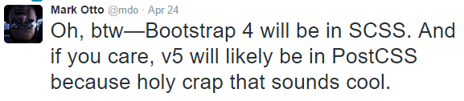
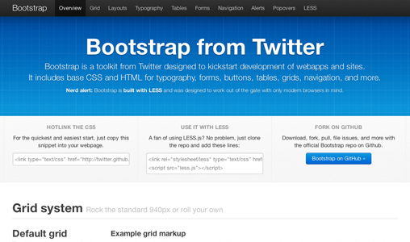
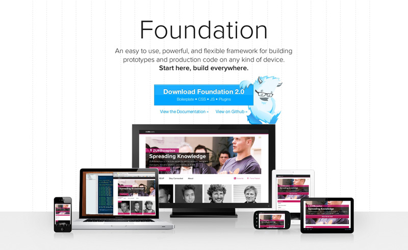

Stanislav Kurinec / @stenlyk
Proč se učit framework? Vždyť je to jen hromada css. Je to něco co nepotřebuju a css napíšu vlastní!
Jo můžete ale ...
Co je CSS Preprocessor? Koukněte na tohle video.
Sass nebo LESS nebo Stylus který si vybrat?
Podle mého názoru je poměrně jednoduchá odpověď: Sass
Pokud se vám líbí více jiný preprocesor, nevadí. Hlavní je, že nějáký používáte.
Pěkné srovnání od Chrise Coyera z CSS-Tricks.
Preprocesory jsou fajn, ale hlavní nevýhodou je rychlost.

Díky technologiím (grunt, glump) se výhledově přesuneme z preprocesorů na postprocesory.
V roce 2011 Twitter oznámil vydání Bootstrapu 1.0.
Použití? Co třeba galerie, výpis produktů ...
možná ano, možná ne, počkejte na ZURB Foundation :)
| Extra malé (<768px) | Malé (≥768px) | Střední (≥992px) | Velké (≥1200px) | |
|---|---|---|---|---|
.visible-xs-* |
Visible | Hidden | Hidden | Hidden |
.visible-sm-* |
Hidden | Visible | Hidden | Hidden |
.visible-md-* |
Hidden | Hidden | Visible | Hidden |
.visible-lg-* |
Hidden | Hidden | Hidden | Visible |
.hidden-xs |
Hidden | Visible | Visible | Visible |
.hidden-sm |
Visible | Hidden | Visible | Visible |
.hidden-md |
Visible | Visible | Hidden | Visible |
.hidden-lg |
Visible | Visible | Visible | Hidden |
Bootstrap 3 poslední verze která bude na Less.
Bootstrap je plně funkční framework, za kterým stojí velká komunita.
Je jednoduché ho rychle nasadit a začít prototypovat aplikaci nebo web.
Výhoda je možnost zvolit si preprocesor.
Nevýhoda je složitější optimalizace, pokud nechcete nějaké komponenty.
V roce 2011 bylo oznámeno vydání Foundation 2.0.
Ekvivalent v Bootstrapu je vložení více sloupců do jednoho row
Ukázka na formulářovém prvku což v Bootstrap jde také pomocí .form-group, ale už to nevyužijete v gridu
Foundation 5.5 je jeden ze tří frameworků které nedávno vznikly vedle foundation pro stránky ještě existují samostatné frameworky pro aplikace a pro emaily.
Oproti předchozím verzím je přechod z verze 4 na 5 poměrně bezbolestným.
IE8 není podporováno a to ani ve verzi 4.
Existuje neoficiální řešení jak docílit alespoň korektního zobrazení pro IE8 návod je zde.
| Bootstrap | Foundation | |
|---|---|---|
| 335K | 45.3K | |
| Počet komponent | 29 | 34 |
| Git hub | ||
| Sledování | 5 008 | 1 431 |
| Oblíbení | 82 082 | 20 263 |
| Přispěvovatelé | 654 | 693 |
| Fork | 32 829 | 4 330 |
| Commits | 11 408 | 8 566 |
| Releases | 32 | 92 |
| Releases | 32 | 92 |
Žádná volba není špatná.
Úplné porovnání na základě funkcionalit http://responsive.vermilion.com/compare.php